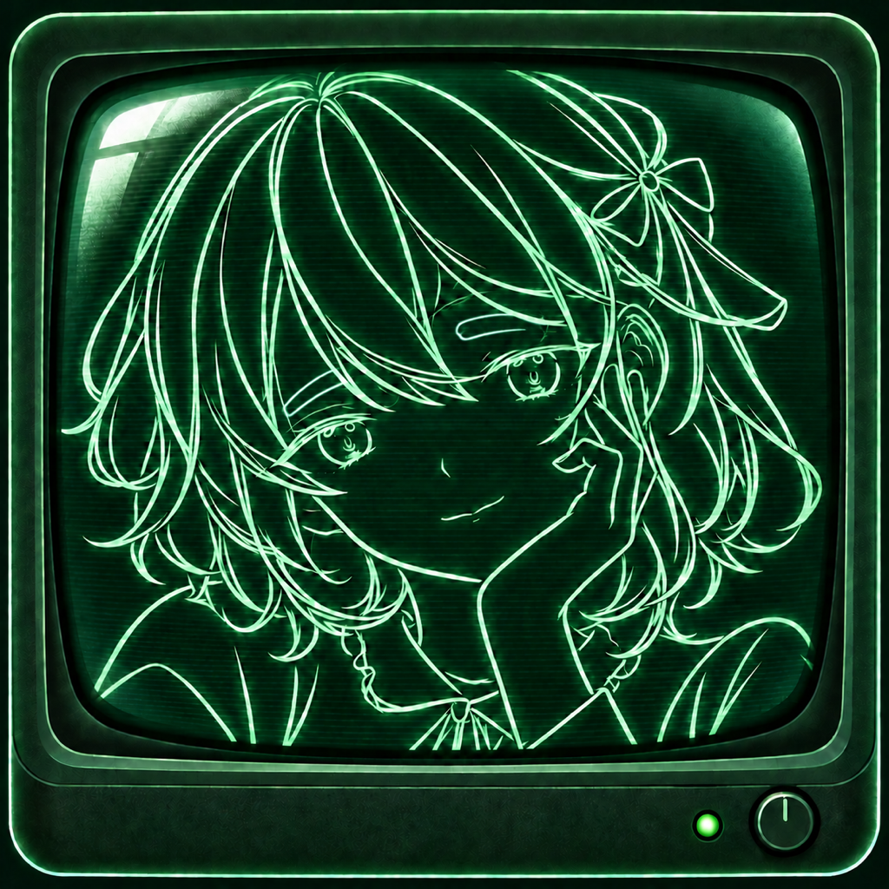

wiregirl.
タロットから言葉を拾う思考ノート。
問いを一つ選び、気になるタロットの絵を眺める。浮かぶ言葉を選んで広げ、二つずつ繋いで、自分の言葉にまとめる。wiregirl. は、考えかけのことを眺めるための小さな道具です。
使い方
- 9つの問いから選ぶか、自分の問いを書きます。
- 気になるタロットを2枚選び、各カードから言葉を2つずつ選びます。
- 4つでまとめるか、8つまで広げるかを選びます。
- 二つの言葉を繋いで自分の言葉を入力し、最後の言葉へまとめます。
- 思考ツリーを保存し、あとから振り返れます。
よくある質問
通信やログインは必要ですか？
アプリの基本機能はオフラインで使えます。アカウント登録はありません。
言葉が決められません。
「取り置く」で候補を残し、「見比べる」で並べて選べます。収束中は「組み替える」で繋ぐ二つを変更できます。
前の操作へ戻れますか？
「ひとつ戻る」を使えます。入力中は「入力を閉じる」でキーボードを閉じてください。
記録を削除したい。
HOMEの「記録」から、削除したい記録の削除ボタンを選び、確認して削除します。
画像はどこに保存されますか？
リザルトの「画像を保存」で選んだ場所です。iPhoneの「ファイル」アプリで確認できます。
機種変更後も記録は残りますか？
専用の同期機能はありません。端末のバックアップや復元の設定に依存します。大切なツリーは画像として書き出しておくことをおすすめします。
お問い合わせ
gotrio5@gmail.com
不具合の際は、iPhoneの機種、iOSのバージョン、アプリのバージョン、起きた操作を添えてください。個人的な問いや記録を送る必要はありません。